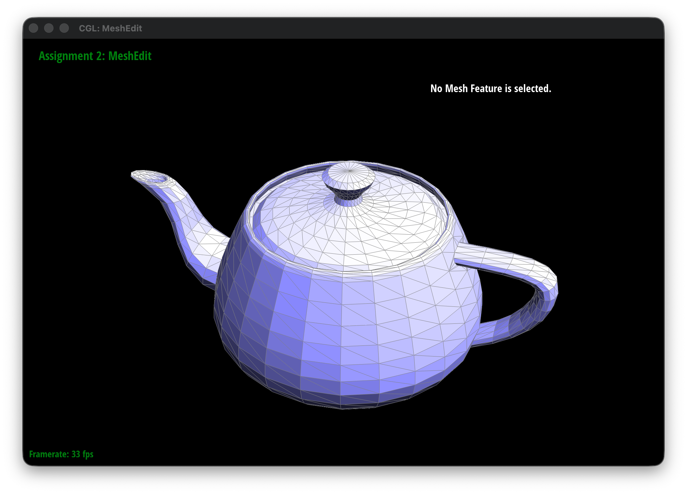

Part 3: Area-Weighted Vertex Normals
Algorithm
To implement Phong shading, we need to calculate the area-weighted normal at each vertex. Phong shading uses vertex normals to smoothly interpolate lighting across the surface. To calculate the area-weighted normal for a specific vertex, we need to find the normals of all the triangles connected to that vertex, scale each face normal by the area of that face, add them all together, and finally normalize the result.
- We use the half-edge data structure to circulate around the given vertex. Starting from the vertex's half-edge, we access the adjacent faces using:
h = h->twin()->next(). - For each valid, non-boundary face, we find the 3D positions of its three vertices using the half-edge pointers:
- \(p_0\): The current vertex position (
h->vertex()->position) - \(p_1\): The next vertex position (
h->next()->vertex()->position) - \(p_2\): The third vertex position (
h->next()->next()->vertex()->position)
- \(p_0\): The current vertex position (
-
A normal vector is perpendicular to the face. We can find this by taking the cross product of two edge vectors on the face. Let the two edge vectors be: \(v_1 = p_1 - p_0\), \(v_2 = p_2 - p_0\).
The cross product \(v_1 \times v_2\) gives us a vector perpendicular to the face. A useful property of the cross product is that its magnitude is exactly equal to twice the area of the triangle formed by \(v_1\) and \(v_2\).
\[ N_{face\_weighted} = v_1 \times v_2 \]Because the magnitude is already proportional to the area, simply computing the cross product automatically gives us a normal vector that is weighted by the area of the face.
-
We accumulate these area-weighted normals for all faces connected to the vertex: \(N_{sum} = \sum (N_{face\_weighted})\). Finally, we return the unit vector of this sum to get the final vertex normal: \(N = \frac{N_{sum}}{||N_{sum}||}\)
Implementation Details
- Initialize a zero vector
Vector3D n(0, 0, 0)to store the sum. - I use a constant half-edge iterator (
HalfedgeCIter h = halfedge()) because the function is markedconst. - Inside the loop, I check if the face is a boundary using
!h->face()->isBoundary(). We ignore boundary faces because they do not represent real surface geometry in this context. For valid faces, I extract \(p_0, p_1, p_2\), calculate the cross product, and add it ton. - The loop continues until
hcircles back to the startinghalfedge(). - Finally,
n.unit()is called to normalize the accumulated vector and return the result.
Result Screenshot
Below are the screenshots of default flat shading and Phong shading.
